Git - Bash sintax
Данная работа представляет собой мой собственный конспект и примеры моих работ с помощью терминала Git-Bash
pwd - путь к папке, в которой мы находимся
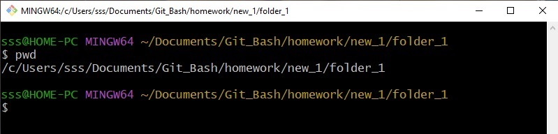ls -la - выводит список содержимого в папке, в которой мы находимся в столбик

ls -l - выводит список содержимого в папке, в которой мы находимся

ls -a - отображает скрытые папки

./ - указание директории, в которой мы сейчас находимся
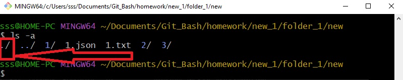../ - указание на родительскую директорию
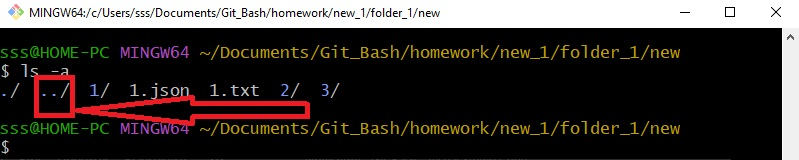cd .. - переход в родительскую папку (на уровень выше)

cd - переводит в дочернюю папку
, где 1 - название папки
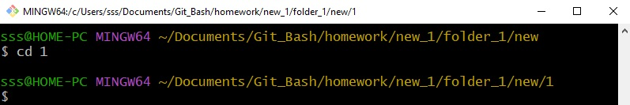mkdir - создание новой папки
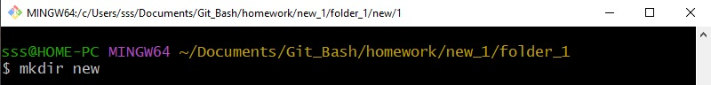ls -la 1 - показывает содержимое папки
, где 1 - название папки

rm -r - удаление директория
, где 2 - название папки, которую удаляем

clear - очищает рабочую область терминала (не удаляет)
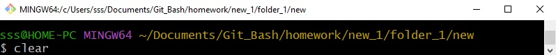history - показывает Всю историю терминала
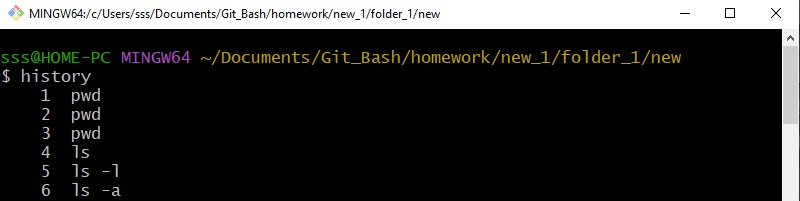history >> hist.txt - создание txt файла со всей историей запросов через терминал
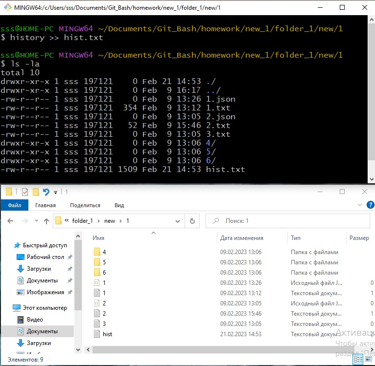Есть несколько способов создания файлов
touch - создание файла
,где 1.txt - это название создаваемого файла (!обязательно с указанием формата файла)

cat > - создание файла (!обязательно указывать формат)
где, 2.txt - название создаваемого файла
После ввода первой строки и нажатия на Enter, терминал ожидает ввод данных, которые наполнят данный файл (в данном случае это one two, three, four, five, six.

cat - вывод содержимого в нутри файла
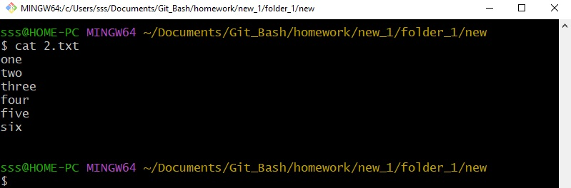cat >> - дополнение (корректировка) файла внутри терминала (без открытия его в графическом интнрфейсе)
, где 2.txt - название файла, который открываем и редактируем
1, 2, 3, 4, 5, 6, 7, 8, 9 - информация, которой дополняем данный файл
Для выхода из редактирования и сохранения Ctrl + C

Посмотрим что у нас получилось, для этого восмользуемся командой:

rm - удаление файла в папке
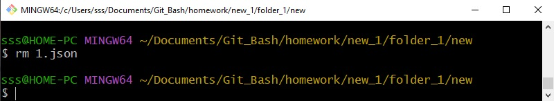cp - копирование файла в папку
, где 2.txt - файл, который копируем;
1 - название папки (дочерней) куда копируем
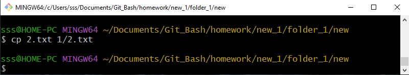mv - перемещение файла
, где 1.json - имя файла, который перемещаем, 3 - наименование папки (дочерней), в которую меремещаем

mv - переименование файла
, где 1.txt - имя файла до переименования, 2.json - имя файла после переименования

explorer . - открывает окно интерфейса с папкой в которой находимся
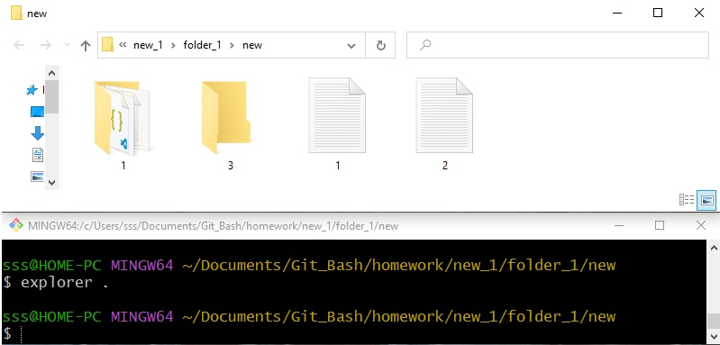

find - поиск файлов, директорий и прочего (учитывая регистр)
find . -name "3" - поиск файла в папке, название которого начинается с 3
, где 3 - имя файла
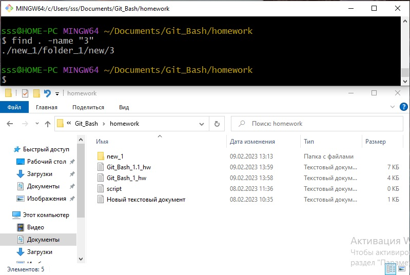find . -type f -name "s*" - поиск файла, название которого начинается с "s"
, где s - первая буква названия файла
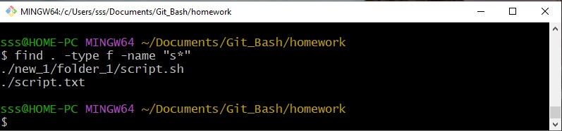